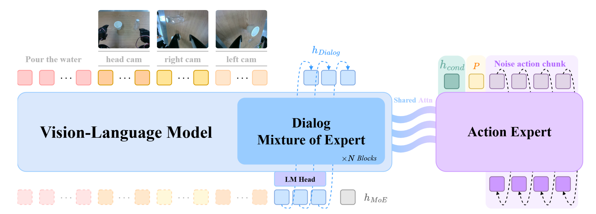
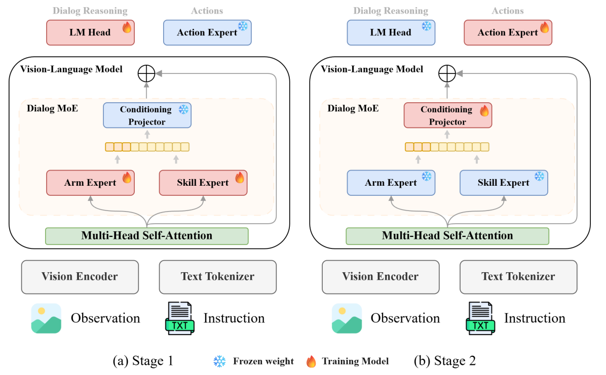
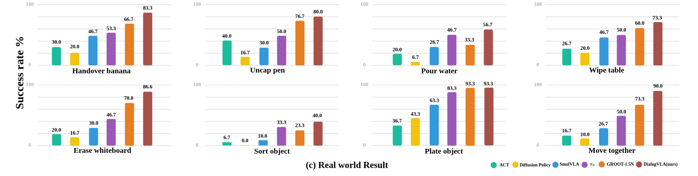

DialogVLA Overall We present DialogVLA, a dialog reasoning-based vision-language-action model for bimanual robot coordination. The model generates structured dialog reasoning to decompose tasks into per-arm subtasks, routes through Parallel MoE to select skill and arm experts, and produces coordinated bimanual actions via Flow Matching. DialogVLA achieves state-of-the-art performance across RoboTwin simulation, RoboCasa simulation, and real-world bimanual manipulation tasks
Abstract
Structurally coupling reasoning and action
Vision-Language-Action (VLA) models show strong generalization for instruction-based manipulation, yet in
bimanual settings two challenges remain: misalignment between high-level decision-making and low-level
action generation, and uncertainty in arm-role assignment. Existing methods implicitly project manipulation
stages and arm-leadership decisions into a single action space, which fails to secure structural control
stability in complex collaborative situations.
We propose DialogVLA, which explicitly reasons about manipulation stages and arm roles through
Dialog Reasoning, and binds high-level reasoning to continuous control by conditioning it on
MoE-based structural routing and a Flow Matching Action Expert. A Two-Stage training
strategy separates reasoning/routing from action generation to improve stability and generalization.
On RoboCasa and RoboTwin benchmarks and in real-robot experiments, DialogVLA consistently outperforms prior
robot-learning and VLA baselines — reaching 82.8% / 63.9% average success on RoboTwin Easy / Hard,
and 75.4% on real-world bimanual collaborative tasks.
Contributions
What's new
1
A structural VLA framework that explicitly decomposes Skill Phase and Arm Role for bimanual manipulation.
2
A design that models collaborative states by configuring Skill MoE and Arm MoE in parallel, delivering them directly as conditioning signals to action generation.
3
A Two-Stage Training strategy that separates reasoning/routing learning from action-generation learning, validated in both simulation and real-robot environments.
Method
How DialogVLA works

DialogVLA Architecture. Multi-view images (head, left/right wrist) and a language instruction are encoded by the VLM.
The Dialog Mixture-of-Experts module produces dialog reasoning tokens \(h_{\text{Dialog}}\) and MoE
conditioning vectors \(h_{\text{MoE}}\) through \(N\) transformer blocks with parallel Skill and Arm routers.
The Action Expert takes the conditioning vector \(h_{\text{cond}}\), proprioceptive state \(\mathbf{p}\),
and a noisy action chunk, then denoises it into coordinated bimanual actions via shared attention with the VLM.
Dialog Mixture-of-Experts. At each timestep, Dialog Reasoning emits a structured JSON that decomposes
the task into a subtask with per-arm think/act traces, a global plan, and a coordination note. The resulting
hidden state is fed to two parallel routers: the Arm Router activates a single expert (\(K{=}1\)) among
Left, Bimanual, and Right, while the Skill Router activates the top-two experts (\(K{=}2\)) among a shared
expert and skill-specific experts such as Lift, Grasp, and Place. The 3-dim arm and 7-dim skill probabilities are
concatenated into a 10-dim MoE conditioning vector, which the Conditioning Projector expands to 1024 dimensions.

Two-Stage training pipline of DialogVLA. Stage 1 trains the Dialog MoE (Skill/Arm routers and LM Head) for dialog reasoning and
MoE conditioning, with the Conditioning Projector and Action Expert frozen. Stage 2 freezes the VLM and Dialog MoE,
training only the Conditioning Projector and Action Expert to produce bimanual actions from the learned routing signals.
Experiments
Experimental setup
Evaluation across simulation and real hardware. DialogVLA is evaluated on two simulation benchmarks —
RoboCasa GR-1 Tabletop (24 PnP tasks) and RoboTwin 2.0 (12 bimanual tasks) — and on the real
SO-ARM 101 platform with three cameras (head, left, right). Real-world evaluation covers 8 bimanual
collaborative tasks: Handover Banana, Uncap Pen, Pour Water, Wipe Table, Move Together, Sort Object, Plate Object,
and Erase Whiteboard.
Rollouts
RoboCasa GR-1 Tabletop
Bottle to cabinet close
Can to drawer close
Cuttingboard to basket
Cuttingboard to pan
Placemat to basket
Placemat to bowl
Tray to cardboard box
Tray to plate
Results
RoboCasa GR1 Tabletop
Table. RoboCasa GR1 Tabletop (verb-grouped averages, success rate %), 50 rollouts per task on 24 PnP tasks.
Task (Avg)
Isaac-GR00T
QwenGR00T
QwenPI
QwenOFT
QwenFAST
VisionOnly
DialogVLA (Ours)
PnP * to * Close (Avg)
24.2
50.3
42.3
43.7
35.0
54.0
44.6
PnP Novel From Cuttingboard To * (Avg)
56.9
52.8
46.0
50.4
50.4
45.2
57.6
PnP Novel From Placemat To * (Avg)
51.9
38.0
43.5
41.5
33.5
32.5
53.5
PnP Novel From Tray To * (Avg)
55.1
39.2
44.0
49.2
32.0
44.8
64.0
PnP Novel From Plate To * (Avg)
57.6
58.5
44.0
61.0
45.0
42.0
56.8
Overall Average
47.6
47.8
43.9
48.8
39.0
44.7
55.3
Rollouts
RoboTwin 2.0
Easy Scenario
Dump bin bigbin
Handover block
Grab roller
Pick dual bottles
Hard Scenario
Dump bin bigbin
Handover block
Grab roller
Pick dual bottles
Results
RoboTwin 2.0 benchmark
Table. RoboTwin 2.0 results on 12 bimanual tasks (success rate %). DialogVLA achieves the highest performance on all 12 tasks.
Task
ACT
π0
RDT
DialogVLA (Ours)
Easy
Hard
Easy
Hard
Easy
Hard
Easy
Hard
Dump Bin Bigbin
68.0
1.0
83.0
24.0
64.0
32.0
94.0
55.0
Grab Roller
94.0
25.0
96.0
80.0
74.0
43.0
98.0
83.0
Handover Block
42.0
0.0
45.0
8.0
45.0
14.0
88.0
67.0
Lift Pot
88.0
0.0
84.0
36.0
72.0
9.0
92.0
59.0
Pick Dual Bottles
31.0
0.0
57.0
12.0
42.0
13.0
82.0
63.0
Place Bread Skillet
7.0
0.0
23.0
1.0
5.0
1.0
91.0
77.0
Place Cans Plasticbox
16.0
0.0
34.0
2.0
6.0
5.0
57.0
18.0
Place Dual Shoes
9.0
0.0
15.0
0.0
4.0
4.0
77.0
63.0
Put Object Cabinet
15.0
0.0
68.0
18.0
33.0
18.0
66.0
67.0
Scan Object
2.0
0.0
18.0
1.0
4.0
1.0
72.0
54.0
Stack Blocks Three
0.0
0.0
17.0
0.0
2.0
0.0
86.0
82.0
Stack Bowls Three
48.0
0.0
66.0
24.0
51.0
17.0
91.0
79.0
Overall Average
34.5
2.2
50.5
17.2
33.5
13.1
82.8
63.9
Each task is evaluated with 100 rollouts on the 14-DoF ALOHA-AgileX embodiment.
Real Robot
Real-world bimanual tasks
Evaluated on the SO-ARM 101 platform (head + left/right wrist cameras) across 8 bimanual collaborative tasks.
DialogVLA reaches 75.4% average success, outperforming ACT, Diffusion Policy, SmolVLA, π0, and GR00T-1.5N on every task.
Handover banana
“handover the banana”
Uncap pen
“Remove the pen cap”
Pour water
×2
“Pour water into the cup”
Wipe table
“Wipe the surface, lifting the obstacle if necessary”
Erase whiteboard
“Erase the text on the whiteboard”
Sort object
×2
“sort items by color”
Plate object
“Place a hamburger and hotdog neatly on a tray for serving”
Move together
“Perform a coordinated transport of the heavy object”

Real-world results. Success rate across the 8 real-world bimanual tasks. DialogVLA consistently outperforms
ACT, Diffusion Policy, SmolVLA, π0, and GR00T-1.5N.
Analysis
Ablation study
Table. Ablation on real-world Handover and Move tasks (success rate %, 20 trials per task). Each component contributes complementarily.
Method
Handover
Move
Avg
w/o MoE Conditioning
65.0
45.0
55.0
w/o Arm Expert
70.0
55.0
62.5
w/o Skill Expert
70.0
65.0
67.5
w/o Stage 1
55.0
35.0
45.0
DialogVLA (Full)
85.0
90.0
87.5
Citation
BibTeX
@article{choi2026dialogvla,
title = {DialogVLA: Bridging Reasoning Action in Bimanual Manipulation via Parallel Mixture-of-Experts},
author = {Choi Jeonghwan and Kim Hyunwoo and Jin Ilsung and Kim Donghan},
journal = {arXiv preprint arXiv:XXXX.XXXXX},
year = {2026}
}